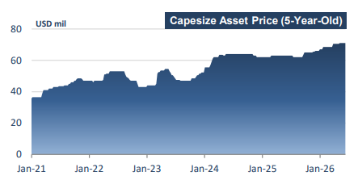
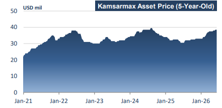
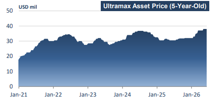
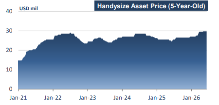

The twenty-fifth trading week presents a striking contrast to the same period a year ago. In 2025, the market ended the week on a soft note, with the Baltic Capesize and Panamax indices settling at $23,879 and $12,151 per day, respectively, while the geared segments remained under pressure, with Supramaxes at $12,305 per day and Handysizes at $11,224 per day. The broader picture was one of weakening freight markets, as sluggish commodity demand, particularly in the coal trade, weighed heavily on earnings across the mid-size sectors, leaving only Capesizes relatively supported by a brief rally in iron ore shipments. Twelve months later, the landscape has changed considerably, and this improvement has characterised most of the current trading year. With the exception of brief periods of volatility, hire rates have consistently outperformed 2025 levels across all segments, supported by firmer commodity flows and healthier market sentiment. By the end of this week, Capesize earnings stood at $37,631 per day, representing a 33.1 percent increase year-on-year, while the Panamax, Supramax, and Handysize sectors outperformed even further, rising by 54.9 percent, 78.4 percent, and 50.3 percent, respectively, to $18,860, $21,715, and $16,804 per day. The strong performance of the geared sectors is particularly noteworthy, highlighting the substantial recovery from the soft market conditions that prevailed during the same period last year.
Between January and May 2026, China imported 516.26 million tonnes of iron ore, marking a 6.3 percent year-on-year increase. However, May discharges underperformed, falling below 100 million tonnes, despite high steel operating rates and solid pig iron output in China, as stronger margins were ultimately offset late in the month by weaker purchasing sentiment driven by rising port inventories and declining iron ore prices. Looking ahead, iron ore imports are expected to increase in June, as the final month of the second quarter is likely to prompt mining companies to accelerate production and shipment schedules in order to meet quarterly shipment targets. Against this backdrop, the overall strength in iron ore trading activity so far this year has lifted year-to-date Capesize earnings to a solid $33,045 per day. Asset values have followed suit, with modern eco Capesizes now assessed at around $71 million, representing a solid 12.7 percent year-on-year increase.

In the coal runs, trade dynamics remain more uneven but increasingly supportive on a forward-looking basis. China’s coal imports for the January-May period have been broadly stable overall, although May alone recorded an 8 percent year-on-year decline. This softness reflects short-term adjustments in domestic supply conditions and shifting procurement timing. However, June imports are expected to rise significantly, with thermal coal arrivals projected to increase by 27.6 percent year-on-year to 27.8 million tonnes, driven by seasonal demand and tightening local supply conditions. Soybean flows have followed a more stable but bifurcated trajectory, with imports by China’s crushers holding at approximately 37 million tonnes over January-May, while May arrivals declined by 15.3 percent year-on-year to 11.79 million tonnes.

Looking ahead, Brazilian export programmes point to firmer shipments into June and July, offering renewed support to Atlantic basin demand. Against this backdrop, the Kamsarmax market has averaged $17,242 per day year-to-date, materially higher compared to last year, with modern eco Kamsarmax asset values now assessed at around $39 million, representing a 26 percent year-on-year increase.
In the steel-linked segment, geopolitical and policy-driven distortions continue to shape trade flows. Chinese exports of rolled steel declined by 8.1 percent year-on-year in the January–May period to 44.6 million tonnes, reflecting the impact of export licensing measures introduced at the beginning of the year. However, short-term momentum has improved, with May exports rising by 8.9 percent month-on-month to 10.3 million tonnes, supported in part by the temporary absence of Iranian steel in international markets, which has redirected demand toward Chinese suppliers. Regional dynamics have also shifted, with India emerging as a net importer of rolled steel in April 2026, following a period of strong export performance in the 2025/26 fiscal year, when shipments rose by 36 percent year-on-year to 6.6 million tonnes, largely driven by robust European pre-buying ahead of policy changes. Within this evolving trade landscape, Ultramax earnings have averaged $16,747 per day year-to-date, up 50 percent year-on-year, while modern eco Ultramax asset values have strengthened to approximately $38 million, reflecting a 25 percent annual increase.

Within the minor bulk segment, trading activity has remained broadly supportive year-to-date, with tonne-mile demand continuing to expand despite mixed industrial and geopolitical conditions. Bauxite and minor ores have been the key driver, underpinned by robust Chinese import demand, while steel-related cargoes have held a broadly stable but uneven trajectory amid divergent global construction trends. Fertiliser flows have provided steady support, increasingly shaped by logistical rerouting and supply-chain adjustments, alongside a consistent base from cement, scrap, and minor minerals, albeit at a more moderate pace than in previous years. Overall, minor bulks remain a structural pillar of dry bulk demand in 2026, with growth increasingly driven by inefficiencies rather than outright demand expansion. In this context, the Handysize market has averaged $13,508 per day year-to-date, up 40 percent yearon-year, with modern Handysize values rising to around $30 million, a 17 percent increase year-on-year.

Overall, the dry bulk market has shifted from a broadly lukewarm 2025 to a markedly firmer 2026, with all vessel segments recording solid year-onyear gains. This has been also reflected in a firmer asset market, with vessel values appreciating across all sizes as earnings strength and improved sentiment feed through into higher valuations. However, this resilience remains increasingly underpinned by structural inefficiencies and persistent logistical frictions, which continue to amplify tonne-mile demand.
Data source:Doric